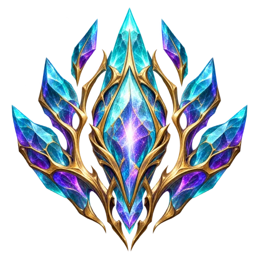
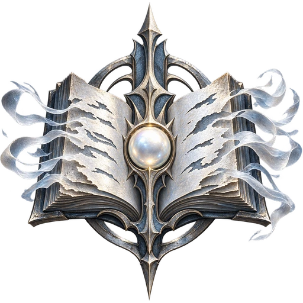
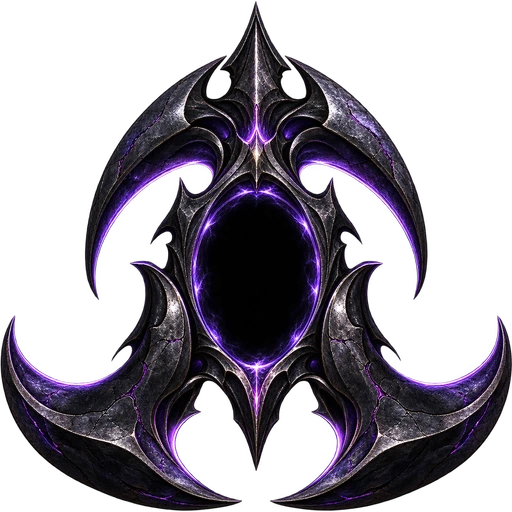

Living crystal, erased lives, alien silence and the heirs of an ancient union. Four complete faction rosters with distinct economies, armies, defenses, aircraft, beasts and building-bound superweapons.
Development expansion: these four factions are separate from the published five-faction alpha.3. The Unwritten, Outer Silence and Nephilim Remnant are unrestricted skirmish choices in the development game. Veilborn remains hidden pending legitimate campaign progression; the 150 mission briefs are designs, not 150 playable maps.

Life inside the crystal
Veilborn
Pure Veilglass awakens as a living people. The Veilborn seek a future beyond the commands imposed by the five older powers. Their secret campaign follows the five interwoven campaigns.
Secret sixth campaign. Authored roster; hidden from the normal lobby until campaign progression is implemented.
Specialisation
Crystalline growth network. Combat units near a powered Heartroot or Resonator take 20% less damage and recover 1% health per second; isolated units lose these benefits.
Playing this faction
Advance behind powered growth nodes. Protect Resonators, take ground deliberately and withdraw damaged elites into the network.
Counterplay
Cut power, destroy the relay, then attack isolated crystal units. Their costly walkers cannot cover every front.
Crystalline screening infantry; gains protection and recovery inside the growth network.
Secret campaign faction — locked in the normal lobby
Original painted game artwork Current original artwork.

People erased from creation
The Unwritten
Pure Veilglass preserves lives deleted from history. The Unwritten fight to become real again, rebuilding a community from names that the world has forgotten.
Playable development skirmish faction. Appears only as a non-player faction in campaigns, usually neutral. No subfactions.
Specialisation
Fragile echoes and decoys. Combat deaths leave short-lived memory remnants; Restoration consumes up to six to reconstruct temporary infantry. No recursive resurrection.
Playing this faction
Use fast, fragile Memory Infantry and Decoy Echoes to draw fire. Preserve the Archive of Names and time Restoration around recent combat losses. Restored infantry are temporary.
Counterplay
Spread damage across fragile troops, deny the remnant area and attack the Archive. Decoys deal no damage; temporary echoes cannot create another memory.
Fast vulnerable physical collector. Escort it; destruction never creates a replacement.
Development skirmish faction; non-player campaign encounters. No subfactions.
Original painted game artwork Current original artwork.

Something beyond the realms
The Outer Silence
An alien presence enters through the gaps exposed by pure Veilglass. The Outer Silence seeks to extinguish thought rather than conquer territory.
Playable development skirmish faction. Appears only as a non-player faction in campaigns, usually neutral. No subfactions.
Specialisation
Short-range ambush and suppression. Hush Stalkers cloak between attacks; isolated combat units gain speed. Detection, screens and focus fire counter them.
Playing this faction
Use cloaked Hush Stalkers and isolated flanking groups. Stillness Seers weaken targets; Null Leviathans finish close-range attacks. Absolute Silence creates a brief opening, not a permanent stun.
Counterplay
Bring detection, layer screens and maintain distance. Attacks or damage reveal Stalkers; the faction struggles to approach a prepared long-range line.
The heart of the base: provides construction queues and the faction technology identity. Deploy its MCV to establish a new base.
Development skirmish faction; non-player campaign encounters. No subfactions.
Original painted game artwork Current original artwork.
Silence / Radar
Absence Lens
Provides the radar and the next tier of technology. A prerequisite for this faction’s aircraft infrastructure.
Development skirmish faction; non-player campaign encounters. No subfactions.
Original painted game artwork Current original artwork.
Silence / Technology
Boundary Archive
Advanced technology prerequisite for the faction superweapon installation. Defend this investment while preparing the endgame.
Development skirmish faction; non-player campaign encounters. No subfactions.
Original painted game artwork Current original artwork.
Silence / Power
Dark Pulse
Early power infrastructure. Build sufficient generation before adding energy-hungry technology and defenses.
Development skirmish faction; non-player campaign encounters. No subfactions.
Original painted game artwork Current original artwork.
Silence / Advanced power
Deep Pulse
Higher-output power infrastructure for an expanding base. Protect it: losing generation can pause superweapon charging.
Development skirmish faction; non-player campaign encounters. No subfactions.
Original painted game artwork Current original artwork.
Silence / Vertical aircraft
Eclipse Nest
Produces the shared realm aircraft after Radar technology.
Development skirmish faction; non-player campaign encounters. No subfactions.
Original painted game artwork Current original artwork.
Silence / Veilglass refinery
Hollow Siphon
Receives physical Veilglass deliveries and supplies the first faction collector. Protect its unloading approach and resource route.
Development skirmish faction; non-player campaign encounters. No subfactions.
Original painted game artwork Current original artwork.
Silence / autocannon
Hush Battery
Ground-defense battery that screens production and harvesting routes. Support it against heavy armor and air attacks.
Development skirmish faction; non-player campaign encounters. No subfactions.
Original painted game artwork Current original artwork.
Silence / Infantry production
Hush Chamber
Trains this faction’s infantry, anti-armor troops and engineers. Establish a screen before committing more expensive units.
Development skirmish faction; non-player campaign encounters. No subfactions.
Original painted game artwork Current original artwork.
Silence / Superweapon installation
Null Cathedral
Null Cathedral deploys Absolute Silence: suppresses enemy weapons and faction abilities for twelve seconds while allowing escape.
Development skirmish faction; non-player campaign encounters. No subfactions.
Original painted game artwork Current original artwork.
Silence / Vehicle production
Null Foundry
Produces heavy ground combatants, collectors and replacement MCVs when their prerequisites are met.
Development skirmish faction; non-player campaign encounters. No subfactions.
Original painted game artwork Current original artwork.
Silence / Beast training
Quiet Den
Trains the shared realm beast. Beast production requires medium technology.
Development skirmish faction; non-player campaign encounters. No subfactions.
Original painted game artwork Current original artwork.
Silence / missilenest
Sky Void
Dedicated air-defense emplacement. Protect vulnerable production and power structures from aircraft.
Development skirmish faction; non-player campaign encounters. No subfactions.
Original painted game artwork Current original artwork.
Silence / Vehicle repair
Stillwater Basin
Repairs compatible ground vehicles and aircraft and unlocks replacement MCV production. Keep a safe route back from the front.
Development skirmish faction; non-player campaign encounters. No subfactions.
Original painted game artwork Current original artwork.
Silence / Mobile construction
Threshold Carrier
Deploys into a faction Construction Yard. Replacement MCVs become available after a Service Depot.
Development skirmish faction; non-player campaign encounters. No subfactions.
Original painted game artwork Current original artwork.
Silence / Anti-armor infantry
Dissonance Lance
Short-range armor/air ambusher; exposed while firing.
Development skirmish faction; non-player campaign encounters. No subfactions.
Original painted game artwork Current original artwork.
Silence / Aircraft
Eclipse Ray
Fast short-range airborne ambusher; retreat after a strike.
Development skirmish faction; non-player campaign encounters. No subfactions.
Original painted game artwork Current original artwork.
Silence / Veilglass collector
Hollow Gatherer
Visible physical resource collector; normal refinery unloading is required.
Development skirmish faction; non-player campaign encounters. No subfactions.
Original painted game artwork Current original artwork.
Silence / Line infantry
Hush Stalker
Cloaks after three quiet seconds. Attacking or taking damage reveals it; detectors counter concealment.
Development skirmish faction; non-player campaign encounters. No subfactions.
Original painted game artwork Current original artwork.
Silence / Combat vehicle
Null Leviathan
Heavy close-range attacker; cannot safely siege long-range defenses alone.
Development skirmish faction; non-player campaign encounters. No subfactions.
Original painted game artwork Current original artwork.
Silence / Beast
Quiet Predator
Rapid melee pursuit beast; vulnerable to screens and focused fire.
Development skirmish faction; non-player campaign encounters. No subfactions.
Original painted game artwork Current original artwork.
Silence / Signature specialist
Stillness Seer
Detector whose attacks briefly slow and weaken the target; suppression refreshes instead of stacking.
Development skirmish faction; non-player campaign encounters. No subfactions.
Original painted game artwork Current original artwork.
Silence / Repair and capture
Void Tender
Repairs and captures; has no combat isolation or cloak bonus.
Development skirmish faction; non-player campaign encounters. No subfactions.
Original painted game artwork Current original artwork.
Heirs to a forbidden union
Nephilim Remnant
Hidden descendants of mortals and celestial beings emerge when the wars threaten their survival. They defend ancestral refuges alongside ordinary human attendants.
Playable development skirmish faction. Appears only as a non-player faction in campaigns, usually neutral. No subfactions.
Specialisation
Slow, expensive giants supported by vulnerable human attendants. Nearby attendants grant non-stacking protection and recovery; raid the support and economy.
Playing this faction
Build a small force of Oathbound Giants and Mountain Bearers, then keep vulnerable attendants close enough to support them. Commit carefully and use Earthbreaker against fortified ground positions.
Counterplay
Kite the giants, raid their slow economy and eliminate attendants. Their replacements are expensive; aircraft avoid Earthbreaker.